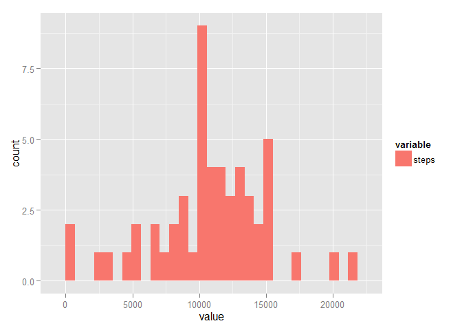
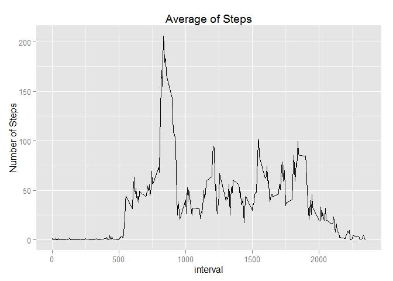
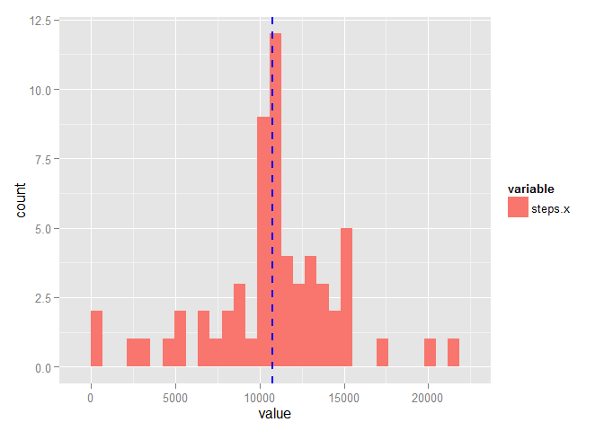
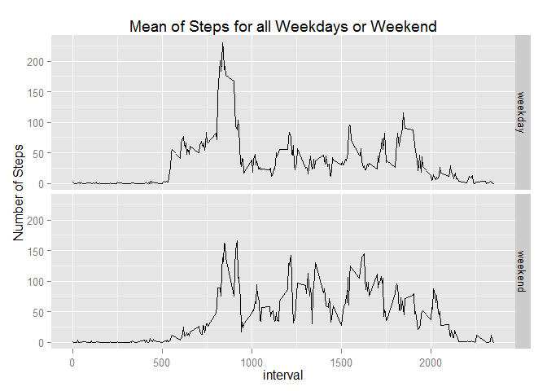

##Load the library for graphs
require(ggplot2)
require(reshape2)
## Load and preprocess the data
## Read steps from file activity.csv
mydata <- read.csv("activity.csv", header = TRUE) ## Extract total steps from a dataframe
totalsteps <- aggregate(steps ~ date, data=mydata, FUN=sum, na.rm=TRUE)
##Make histogram of the total number of steps taken each day
ggplot(melt(totalsteps), aes(value, fill = variable)) + geom_histogram(position = "dodge") 
##Calculate and report the mean and median total number of steps taken each day
vectormean <- totalsteps$steps
mean(vectormean)## [1] 10766 median(vectormean)## [1] 10765Mean total number of steps per day is 10766
Median total number of steps per day is 10765
##Extract average steps from a dataframe
avg.steps.byinterval <- aggregate(steps ~ interval, data=mydata, FUN=mean, na.rm=TRUE)
## Calculate interval of maximum steps
rowofmax <- which.max(avg.steps.byinterval$steps)
intervalofmaxsteps <- (avg.steps.byinterval$interval[rowofmax])
intervalofmaxsteps## [1] 835 ##Make Time series plot of the 5-minute interval(x-axis) and the average number of steps.
time.series.steps <- ggplot(avg.steps.byinterval, aes(interval, steps)) + geom_line()
time.series.steps <- time.series.steps + ggtitle("Average of Steps") + scale_y_continuous(name= "Number of Steps")
time.series.steps
The 5- minute interval, on average across all the days in data set, which contains the maximum number of steps is 835 .
The merge function was used to “join” the original data set with avg.steps.byinterval, thus adding the average value for the interval in a new steps.y column. Then steps.x values for rows with NAs were replaced with values in the steps.y column.
##Calculate and report total number of the missing values in the dataset
count.nas <- length(mydata[is.na(mydata$steps),1])
count.nas## [1] 2304 ##Fill in all the missing values in the dataset
filldata <- merge(mydata, avg.steps.byinterval, by.x = "interval", by.y = "interval")
filldata[is.na(filldata$steps.x),2] <- filldata[is.na(filldata$steps.x),4]
##Extract average steps from a dataframe
totalsteps.fill <- aggregate(steps.x ~ date, data=filldata, FUN=sum)
##Make Histogram of the total number of steps taken each day
##Vertical line shows the mean value
ggplot(melt(totalsteps.fill), aes(value, fill = variable)) + geom_histogram(position = "dodge") + geom_vline(aes(xintercept=median(value)),color="blue", linetype="dashed", size=1)
##Calculate and report the mean and median of the total number of steps per day.
mean(totalsteps.fill$steps.x)## [1] 10766 median(totalsteps.fill$steps.x)## [1] 10766The total number of the missing values in the dataset is 2304 .
The results shows that both the mean and median of the total number of steps per day are identical. Mean total number of steps per day is 10766 .
Median total number of steps per day is 10766 .
Panel plot of the weekedays and Weekends shows below.
## use as.Date and factor function to create weekend data frame
z <- weekdays(as.Date(filldata$date), abbreviate = TRUE)
filldata$weekend <- factor(as.numeric((z == "Sat") | (z == "Sun")), labels = c("weekday", "weekend"))
##Extract average steps from weekdays and weekend
weekend.df <- aggregate(steps.x ~ interval + weekend, data=filldata, FUN=mean)
##Plot the average steps for both Weekend and weekdays
ts <- ggplot(weekend.df, aes(interval, steps.x)) + geom_line()
ts <- ts + facet_grid(weekend ~ .) + ggtitle("Mean of Steps for all Weekdays or Weekend") + scale_y_continuous(name= "Number of Steps")
ts
Note that the echo = FALSE parameter was added to the code chunk to prevent printing of the R code that generated the plot.